这页怎么用
- 远程连接实验平台的问题，优先看第
2节。 - VSCode 图形化调试的问题，优先看第
3节。 xv6运行时报错，优先看第4节。- Git 相关问题，优先看第
5节。 - 命令行 GDB 相关问题，优先看第
6节。
实验环境常见问题¶
1. 高版本工具兼容问题¶
1.1 QEMU >= 6.0.0 时，xv6 无法启动¶
如果你使用的是较新的 QEMU，启动 xv6 时可能会遇到这个兼容问题。可参考 Piazza（Fall 2022）的说明：
https://piazza.com/class/l7fs47nofoc4pm/post/8
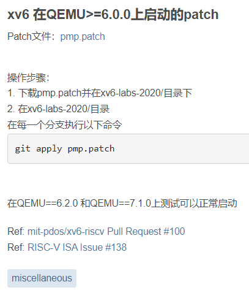
对应补丁文件： pmp.patch
该补丁来自往届同学的分享，在此致谢。
1.2 GCC >= 12 时出现编译报错¶
如果你使用的是较新的 GCC，编译 xv6 时也可能触发兼容性报错。可参考 Piazza（Fall 2022）的说明：
https://piazza.com/class/l7fs47nofoc4pm/post/22
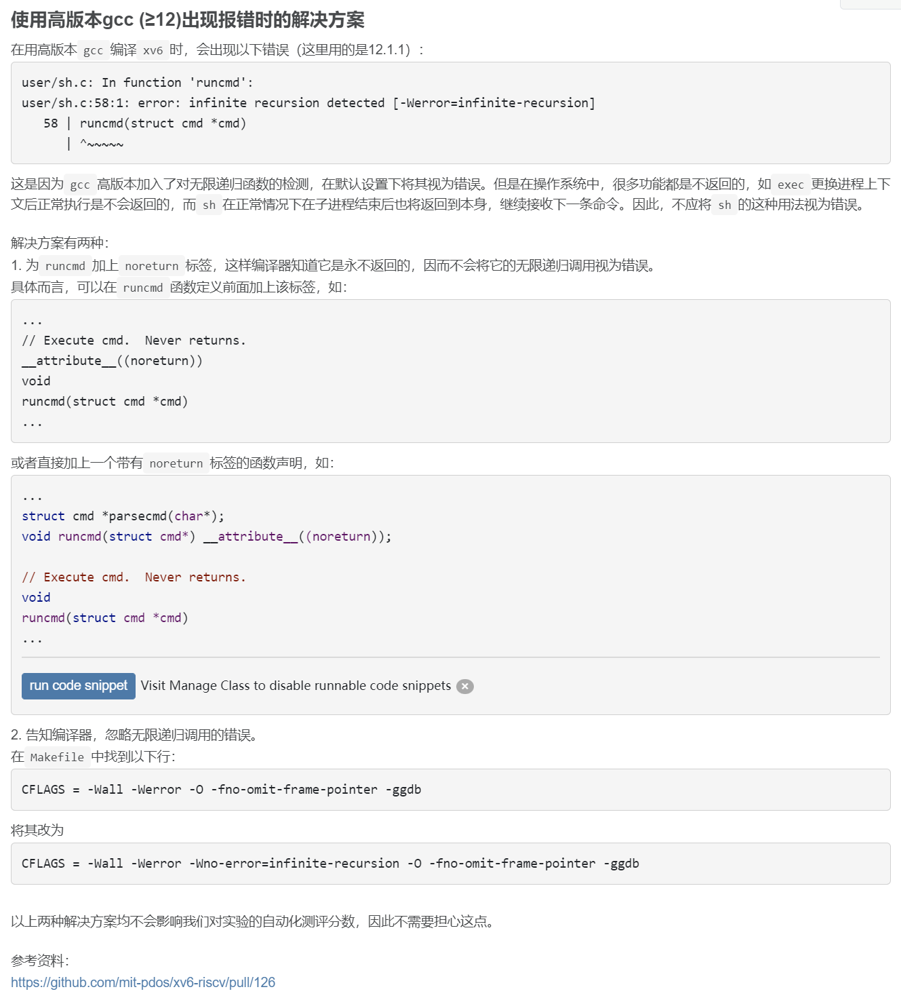
2. VSCode 无法连接实验平台¶
2.1 报错：ssh: connect to host 10.249.12.98 port 22: Connection timed out¶
这通常是把 SSH 端口写成了默认的 22。课程实验平台应使用指定端口，请按远程实验平台使用指南重新配置连接。
远程实验平台IP地址： 10.249.12.98 ，端口号： 6666
2.2 报错：bad owner or permission¶
这是 Windows 下 SSH 配置文件权限不符合 OpenSSH 要求导致的。
可进入 C:\Users\用户名\.ssh，右击 config 文件，打开“属性 → 高级安全设置”，选择“禁止继承”，并删除所有继承得到的权限。
更详细的操作可参考：
https://www.cnblogs.com/Akkuman/p/11187776.html
2.3 在远程实验平台上 clone xv6-oslabs-hitsz 失败¶
如图：
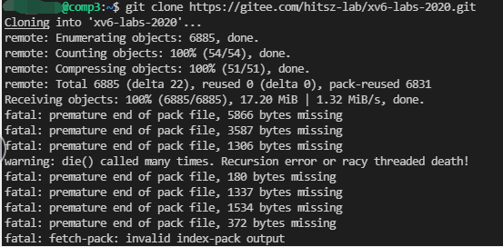
这通常不是 git clone 本身的问题，而是远程账号的磁盘配额不够了。
实验平台会对每位同学的空间使用做限制；如果之前的《计算机设计与实践》实验目录 cdp-tests 还在，尤其是其中的 waveform 波形文件较多，就很容易把配额占满。
可使用 MobaXterm 登录后，删除不再需要的波形文件：
执行删除前，请先确认自己已经进入 cdp-tests/waveform 目录。
清理完成后，再重新执行 clone，通常即可恢复正常。
2.4 报错：mkdir: cannot create directory '/home/students/XXX'¶
如图：
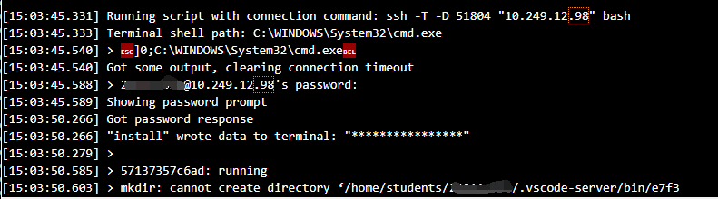
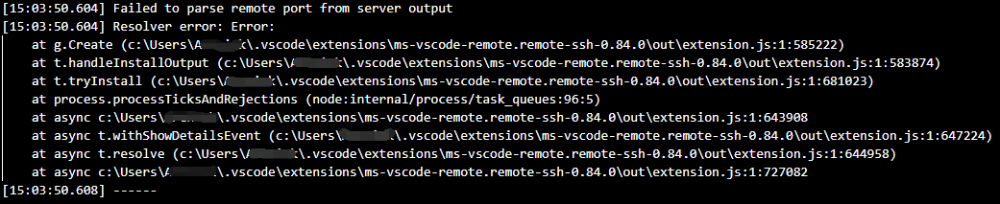
这和上一问本质相同，也是远程账号空间不足导致的。
常见原因仍然是 cdp-tests/waveform 占用了过多空间。清理该目录下不再需要的波形文件后，再重新创建目录即可。
可使用 MobaXterm 登录后执行清理：
同样地，执行删除前请先确认当前目录确实是 cdp-tests/waveform。
3. VSCode 无法用 GDB 图形化调试¶
3.1 报错：Failed to attach: Remote communication error¶
VSCode 远程调试时，提示如下错误：
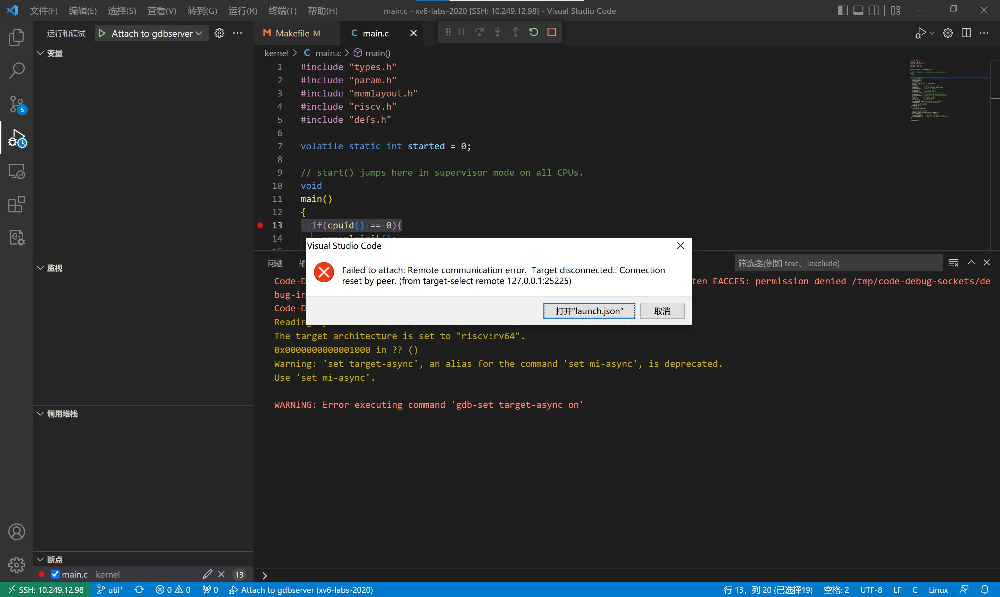
具体解决方案可参考 Piazza（Fall 2022）：
https://piazza.com/class/l7fs47nofoc4pm/post/20
这类报错通常出现在 VSCode 图形化调试 场景下：VSCode 会自动连接 QEMU 的调试端口，如果 .gdbinit 中还保留了手动 target remote ...，就会出现重复连接。
打开 xv6 工作目录下的 .gdbinit 文件，将第三行 target remote 127.0.0.1:*** 用 # 注释掉。
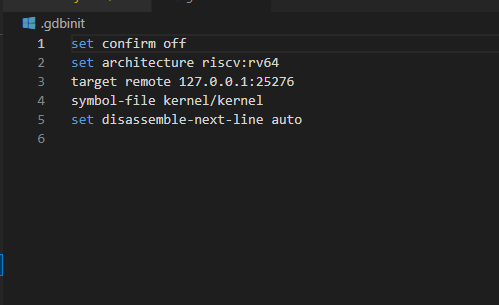
3.2 报错：Failed to attach: 127.0.0.1:XXX: Connection timed out¶
如图：
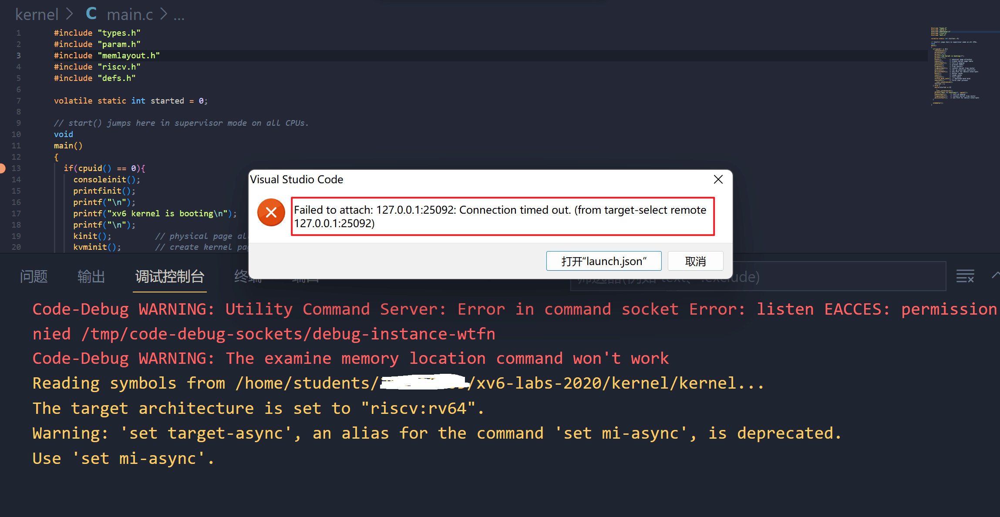
最常见的原因有两种：
- 没有先在终端里执行
make qemu-gdb，而是直接点击了 VSCode 的调试按钮。 launch.json中配置的 GDB 端口号，与 QEMU 实际监听的端口号不一致。
建议先确认 QEMU 已经以调试模式启动，再检查 launch.json 里的端口配置。
3.3 报错：Failed to attach: Truncated register 37 in remote 'g' packet¶
如图：
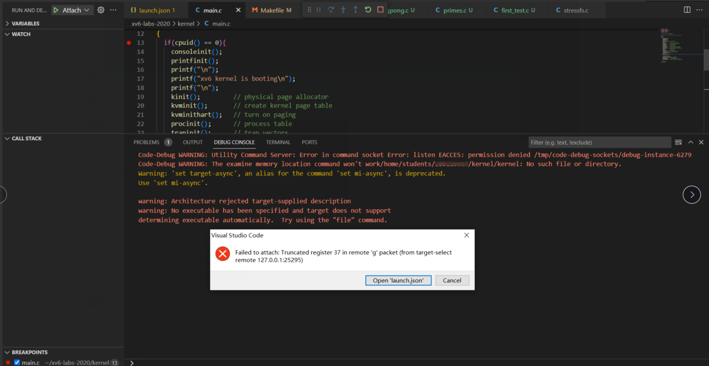
这通常是因为 VSCode 打开的工作区不是 xv6 仓库根目录，而是在外面又多包了一层目录。
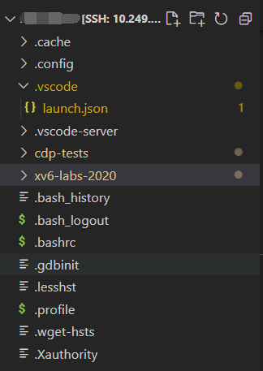
请先 确认当前 VSCode 工作区就是 xv6 仓库本身，没有额外嵌套一层目录 。
可按下 Ctrl+` 打开终端后执行 ls。正常情况下，你应该直接看到如下内容：
ldap_example@OSLabExecNode0:~/xv6-oslabs-hitsz$ ls
conf fs.img grade-lab-util gradelib.py gradelib.pyc kernel LICENSE Makefile mkfs README user
如果不是这个结构，请重新打开工作区，直接选择 xv6 所在文件夹。正确的工作区应如下图所示：
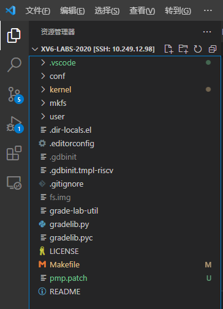
4. xv6 运行时报错¶
4.1 报错：Is another process using the image [fs.img]¶
如图：
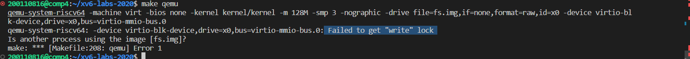
这通常说明上一次启动的 qemu 还没有退出，仍在占用 fs.img。
可以先用 ps 或 top 看一下是否已有 qemu 在运行；如果有，请先结束该进程。
具体也可参考 Piazza（Fall 2022）：
https://piazza.com/class/l7fs47nofoc4pm/post/23
另一种常见做法是：在 xv6-oslabs-hitsz 目录下先执行 make clean 清理 fs.img，再重新运行 make qemu。
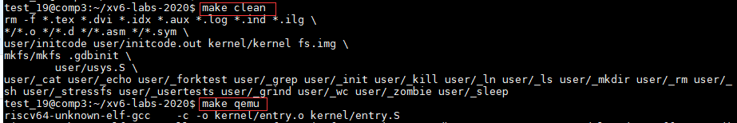
4.2 报错：/usr/bin/env: 'python': No such file or directory¶
这说明当前环境只安装了 python3，但脚本里调用的是 python。
只需让系统把 python3 识别为 python 即可，执行：
sudo ln -s /usr/bin/python3 /usr/bin/python
这条命令会在 /usr/bin 下创建一个从 python 指向 python3 的符号链接。完成后，再运行 ./grade-lab-util sleep 即可。
5. Git 常见问题¶
5.1 报错：Permission denied (publickey)，无法 push¶
如果你在推送到远程仓库，或从远程仓库拉取时，看到类似下面的报错：
git@gitee.com: Permission denied (publickey).
fatal: Could not read from remote repository.
Please make sure you have the correct access rights
and the repository exists
这通常说明你当前仓库使用的是 SSH 地址，但本机 SSH 密钥没有配置好，或没有绑定到当前账号。
本课程统一推荐 Git 远程仓库使用 HTTPS。请先检查：
git remote -v
如果你看到 origin 是 git@gitee.com: 开头的地址，建议改成：
git remote set-url origin https://gitee.com/你的用户名/你的仓库名.git
git remote -v
然后再重新执行 git push。
如果你已经熟悉 SSH 密钥配置，也可以继续使用 SSH；但对大多数同学来说，改用 HTTPS 更直接，也更稳妥。详情可参见实验实用工具。
5.2 怎么知道自己修改了哪些文件？¶
实验通常要求提交 所有 被修改过的文件。一个直接的方法是：把当前分支与上游仓库对应分支做比较。
下面以将当前分支与上游仓库的 syscall 分支比较为例：
lgz_admin@OSLabExecNode0:~/git_demo/xv6-oslabs-hitsz$ git fetch --all
Fetching origin
Fetching upstream
lgz_admin@OSLabExecNode0:~/git_demo/xv6-oslabs-hitsz$ git diff --stat upstream/syscall *
kernel/kalloc.c | 2 ++
kernel/syscall.c | 1 +
kernel/syscall.h | 1 +
kernel/sysinfo.h | 1 +
4 files changed, 5 insertions(+)
如果你要比较其他实验分支，只需把第二条命令中的 syscall 换成对应分支名即可。
请先在本地切换到对应分支！
在比较的时候，你需要将本地分支与上游对应分支进行比较。举例而言，你不会想比较本地的util分支和远程的syscall分支，因为这两个不是一个实验的。请先使用git checkout 分支名以切换到对应分支，并在使用git diff --stat upstream/分支名 *时指定 同一个 上游分支。
未设置上游仓库？
如果git报告“fatal: ambiguous argument 'upstream/分支名': unknown revision or path not in the working tree.”，说明你尚未设置上游仓库。请先按本指南中的3.1-同步上游仓库一节完成上游仓库的设置与同步，再进行比较。
5.3 为什么不能切换分支（checkout）？¶
最常见的原因是：你当前工作区还有尚未保存的修改。此时直接 checkout，就会触发类似下面的报错：
lgz_admin@OSLabExecNode0: ~/git_demo/xv6-oslabs-hitsz$ git checkout util ─╯
error: Your local changes to the following files would be overwritten by checkout:
Makefile
Please commit your changes or stash them before you switch branches.
Aborting
通过 git status 指令，我们可以检查当前 Git 的状态。如果你的输出如下所示：
lgz_admin@OSLabExecNode0: ~/git_demo/xv6-oslabs-hitsz$ git status
On branch syscall
Your branch is up to date with 'origin/syscall'.
Changes not staged for commit:
(use "git add <file>..." to update what will be committed)
(use "git restore <file>..." to discard changes in working directory)
modified: Makefile
no changes added to commit (use "git add" and/or "git commit -a")
这说明当前工作区里还有尚未保存的更改。请先参考3.3.1 使用命令行完成操作或3.3.2 使用 VSCode 内建图形界面完成操作完成 commit。
如果你确认这些修改都不需要，也可以直接放弃它们，再强制切换分支，例如：
git checkout -f syscall
5.4 报错：验证 commit.patch 时出现 cannot apply binary patch¶
在验证 commit.patch 是否正确时，可能会看到如下报错：
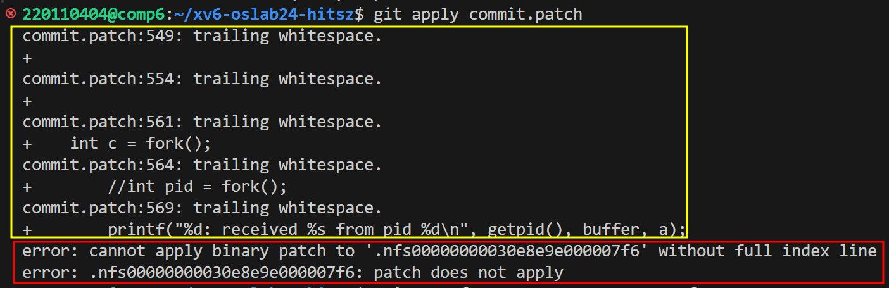
这里要先区分：黄框通常只是警告，真正需要处理的是红框中的错误。
如果出现 cannot apply binary patch 一类信息，说明你的 commit 中混入了二进制文件，而 commit.patch 无法正确处理这类内容。这时可按下面的步骤处理：
- 将剩余的验证步骤执行完毕，切回分支头部
- 执行
git rm 二进制文件名，将上述二进制文件删除 - 使用
git add和git commit提交这次修改 - 最后执行
make diff重新生成commit.patch
6. GDB 命令行调试问题¶
6.1 不能 stepi ecall 或 sret¶
这通常是因为使用了不合适的 gdb。
请使用 riscv64-unknown-elf-gdb，不要使用 gdb-multiarch 或 riscv64-unknown-linux-gnu-gdb。其中：
elf面向裸机程序，适合xv6这类操作系统代码；linux-gnu面向 Linux 用户态程序；- 因此，只有前者更适合调试
ecall、sret这类涉及特权级切换的指令。
6.2 gdb-dashboard 装好了但没有显示¶
可按下面两步检查：
- 看看
~/.config/gdb/gdbinit是否存在；如果存在，请先删除。因为gdb会优先读取它，而不是~/.gdbinit。 - 执行
tail ~/.gdbinit，检查文件末尾是否有set auto-load safe-path /这一行；如果没有，请手动补上。
6.3 VSCode 图形化调试可用，但命令行 GDB 调试失败¶
根源在于： VSCode 图形化调试 和 命令行 GDB 调试 对 .gdbinit 第三行的要求正好相反。
- 用 VSCode 图形化界面 调试时，VSCode 会自动连接 QEMU，因此应把第三行注释掉；
- 用 命令行 GDB 调试时，GDB 需要自己连接 QEMU，因此第三行必须保留。
也就是说，你需要根据当前使用的调试方式，决定 target remote 127.0.0.1:*** 这一行是否注释。
例如：
set confirm off
set architecture riscv:rv64
target remote 127.0.0.1:25019
symbol-file kernel/kernel
set disassemble-next-line auto
set riscv use-compressed-breakpoints yes
如果是命令行 GDB 调试，就保留第三行；如果是 VSCode 图形化调试，就在这一行前面加 #。
6.4 报错：tcp:26000 failed to find an available port: Address already in use¶
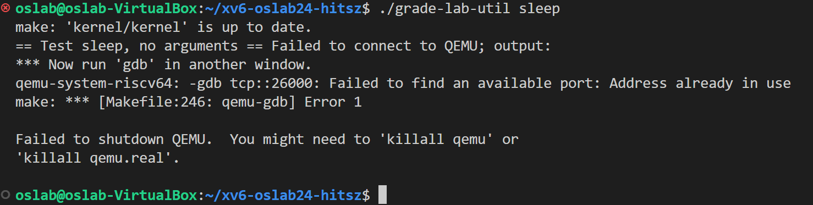
这说明 GDB / QEMU 想使用的调试端口已经被其他进程占用了。
先查看到底是哪个进程占用了这个端口：
lsof -i :26000
这条命令会列出占用该端口的进程信息，关键是记下其中的 PID（进程号）。
找到 PID 后，就可以结束这个进程：
sudo kill -9 <PID>
如果你使用的是远程实验平台，请改用下面这条命令：
kill <PID>
请将 <PID> 替换为实际的进程号，< > 本身不要输入。
如果你报错里的端口号不是 26000，请按实际端口号替换。xv6 调试时通常通过 make qemu-gdb 启动，其底层会执行类似 qemu-system-riscv64 -gdb tcp::XXXX ... 的命令，其中 XXXX 就是实际使用的调试端口。
6.5 报错：.gdbinit:3: Error in sourced command file: could not connect: Connection timed out.¶
执行调试时出现连接超时错误，具体提示如下：
.gdbinit:3: Error in sourced command file: could not connect: Connection timed out.
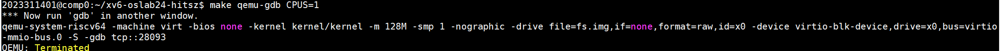
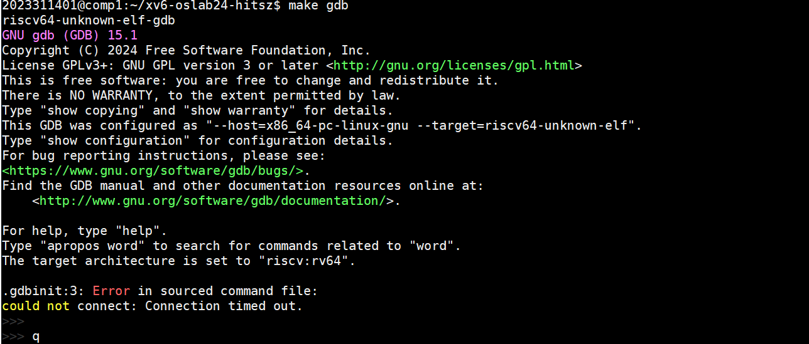
在远程实验平台里，这类问题通常不是 .gdbinit 本身写错了，而是两个调试终端落在了不同的计算节点上。由于 .gdbinit 中使用的是 127.0.0.1，这个地址只在当前节点本地有效；一旦两个窗口不在同一节点，连接就一定会超时。
首先查看命令行提示符，确认当前所在节点（远程实验平台总共有 8 个节点，编号从 0 到 7）：
- 若显示
学号@comp0:~$，表示处于计算节点 comp0 - 若显示
学号@comp1:~$，表示处于计算节点 comp1 - ……
如果两个命令处于不同节点，那么 .gdbinit 第 3 行配置的本地端口连接就会失败：
target remote 127.0.0.1:28093 # 不同节点间无法访问此端口
因此，必须确保 make qemu-gdb CPUS=1 和 make gdb 在 同一计算节点 上执行：
- 先打开第一个窗口，登录实验平台
- 立即打开第二个窗口 ，登录实验平台
- 在第一个窗口运行
make qemu-gdb CPUS=1；在第二个窗口中运行make gdb
登录后请再次核对两个窗口的节点名；如果仍然不同，请关闭其中一个窗口并重新登录，直到两个窗口位于同一节点，再启动 QEMU 和 GDB。只有这样，访问 127.0.0.1 上的调试端口才不会跨节点失败。